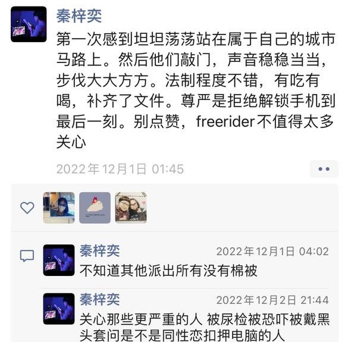

秦梓奕：“我想改变些什么” - WOMEN我们
1月19日对于大多数与秦梓奕同期被捕的年轻人来说，是一个重要的日子。因为她们大多数人都在1月12日被公安机关报请检察院批捕，按照我国相关法律程序规定，检察院会在7日之内做出是否批捕的答复。也有消息称，原定于今日作出的是否批捕的决定，将可能罕见延期。因此，外界的持续关注与支持非常重要。 每一个被捕的名字后面都有一个思而择之的丰富人生，她们应该被人们了解，也应该作为我们人生的镜鉴。
撰文 胡骧东
编辑 于长夜
1月26日，在亮马河边抗议的青年之一秦梓奕失联将满一个月。
1 月19日对于大多数与她同期被捕的年轻人来说，是一个重要的日子。因为她们大多数人都在1月12日被公安机关报请检察院批捕，按照我国相关法律程序规定， 检察院会在7日之内做出是否批捕的答复。也有消息称，原定于今日作出的是否批捕的决定，将可能罕见延期。因此，外界的持续关注与支持非常重要。
每一个被捕的名字后面都有一个思而择之的丰富人生，她们应该被人们了解，也应该作为我们人生的镜鉴。

散沙
“我的同伴、朋友与同学即将通向未来社会精英之路，我的心绪却留在那些争取群体权益的家长里短与对边缘、草根人群的关注上……”
秦梓奕，90后，出生于西北的黄土地上，幼时跟随父母迁往深圳。
这是一个父母都是中产成功人士，衣食无忧的家庭。在匮乏与富裕的激烈对比中长大，令秦梓奕的视线一直停留在中国社会的鸿沟中。
在2015年一篇自述文章中，她列举了黄土地上的亲戚、端来高级补品的母亲，以及深圳巨大财富的创造者，认为这些迥异的人“散沙式地分布在国土各个角落，我却看不到他们与脚下土地动脉的关系，看不到他们与他们所依赖的事物的关系。”
“我想改变些什么。”幼时，秦梓奕懂得在大人面前维护保姆，刚成人，她就向父母表达对底层的愧疚：“生在好家庭只是幸运”。
天命
“我 不理解为民主斗士们摇旗呐喊的人们为什么一定要在汗水与酒精中标榜自己对E罩杯网络女神的崇拜，我不理解邀请美国人与中国人一同探讨慈善话题的主办方为什 么坚持要求订北京旺季的四星级酒店，我不明白刚刚提倡过环保生活的学生会为什么会认为用回收的酸奶盒做宣传太'山寨'。”
2011年，秦梓奕考入清华大学法学院，在这所顶尖高校中，她将自己形容成异类-–—某种程度上说，这体现了独立思考的精神。她跑遍北京的独立书店与知识分子沙龙，在人人网上添加言辞犀利的人、参与不同青年组织的聚会。“我始终相信，我有天命。”
天命源于她内在的“较真”。大学里，她在拒绝踏实那条从众的“社会精英”之路。她关心社会现实，关注群体权益和边缘、草根人群，这是与那条“精英”的康庄大道不同的野径，荆棘遍布，显得“不够得体”。
即使选择另一条路，秦梓奕也不盲从。她认为“民主斗士”物化女性，质疑在五星级酒店举办的慈善活动，也不明白环保爱好者的知行不一。
她 总在校准方向。她混迹人文社科启蒙平台“北斗”，仰慕和远观法律维权圈子，参与706青年空间的发展讨论。她读晦涩的政治哲学著作，去高年级的课堂上学司 法政治，还去挑战法学院最严厉的老师的西方法律思想史。她像一粒种子，在宽松肥沃的土壤中汲取各种营养，试图长成自己想要的样子。
本科毕业后，秦梓奕放弃了法学方向的工作，获得中国国家留学基金委的资助，去往美国芝加哥大学就读社会学专业。
记录者
“别怕你梦得更大声更刺耳；但也请付出与之相匹配的行动与审慎。”
2017 年，研究生毕业后，秦梓奕回到北京，成为财新传媒法治组的实习记者。这年底，北京大兴发生了一场火灾，以此为由政府对全市“低端人口”进行驱赶。秦梓奕参 与了这次突发报道，她独自去河北出差，摸到了死者家属的老家，并全说他们接受采访，后来这组报道获得财新年度最佳突发报道奖。
2018年，秦梓奕成为财新传媒的正式记者，报道环境污染。她同样在突发报道中表现出色，她参与了福建泉州的碳九事件报道，以及对上海附近燃烧的“桑吉”轮救援行动的报道，分别在这年底，获得财新年度全媒体报导奖和年度突发报道奖。
2019年，秦梓奕成为首个报道非洲猪瘟在中国蔓延的记者。她撰写的封面报道报道《猪瘟凶猛》甚至获得了体制内的认可，获得第31届中国经济新闻奖一等奖。
最能出活的志愿者
“我们体内都有一个心虚而痛苦的自己，而唯有那个自己最知道她真正需要什么、珍惜什么，他在经历、等待什么；唯有那个自己，最有爆发力。”
2019 年4月，秦梓奕已为财新撰写了超过一百篇报道。但她再度调转方向，决定遵循自己内心的理念，去学习电影制作。她再度启程，入读香港浸会大学MFA （:Master of Fine Arts in Film, Television and Digital Media）项目，从剧本到拍摄从零学起，自费拍摄了毕业作品。
在那三年后的2022年8月，秦梓奕从香港回到北京，把毕业短片放给新朋友们品鉴。这部短片在她被警察扣押的电脑里，从未大范围地公开放映，据看过的人说，那是一部讲述男女情感纠葛的虚构故事片，女主角的职业是记者，秦导或许在其中投射了自己过去的经历。
朋友们说，秦梓奕并不是人群中积极的那个，她总是在观察，有自己的主见，但做事肯吃苦又牢靠。她从未停止独立思考，追逐自己想做的事。
曾 经混迹“北斗”论坛的大学生们结成了“海上指南针”志愿组织，在疫情封控中提供志愿服务。直到最近，志愿组织的负责人才发现，最能出活的骨干志愿者Abi 就是秦梓奕。2020年武汉封城期间，有私家车的市民支援组成车队，运送急症病人，秦梓奕参与远程协助，将微博上的呼号核实和收集起来，为他们连接车辆和 医生。2022年春天上海封城时，秦梓奕已经是联络组的组长，她在被困在家中的血透患者的家属群里，及时回答和安抚，为几十名血透患者找到了医生。
11月底，她说：“第一次感到坦坦荡荡站在属于自己的城市马路上。”
2022年11月30日，秦梓奕失联了24小时。她配合调查，补齐手续材料，“尊严是没有交出手机”。
2022年12月27日，这个在前一天慨叹“好想有猫”的女孩，被五、六个人从深圳的家里带走。她先被带入平谷看守所，再被转到朝阳看守所。她的父母从南方赶到北京，迷茫地徘徊在冷风里，至今没人能见到她。

相关链接
https://chinadigitaltimes.net/chinese/691558.html
Thanks for reading WOMEN我们's Substack! Subscribe for free to receive new posts and support my work.